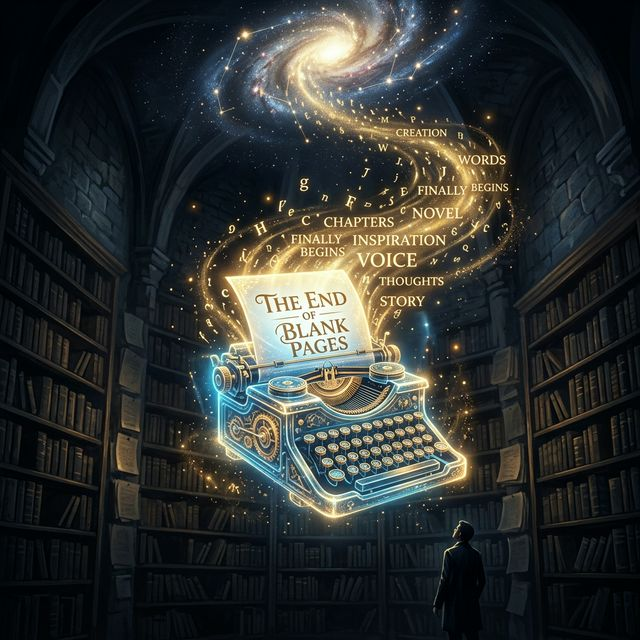
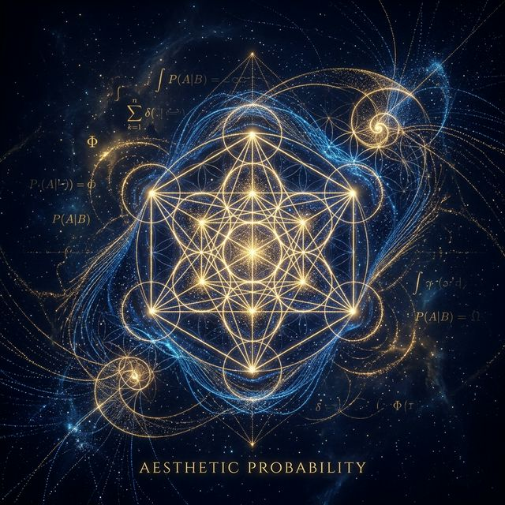
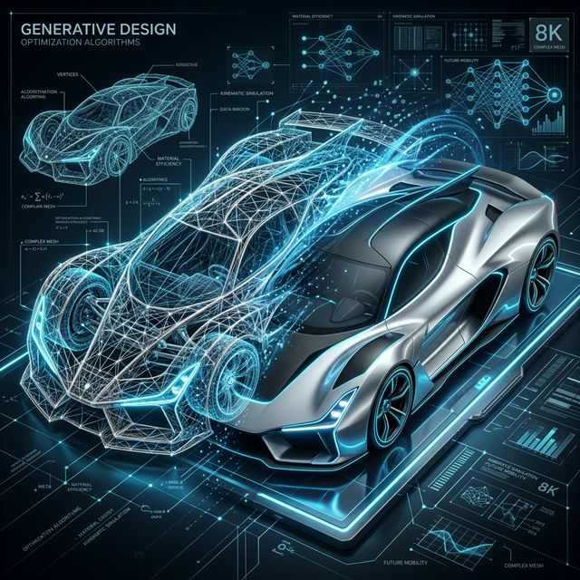
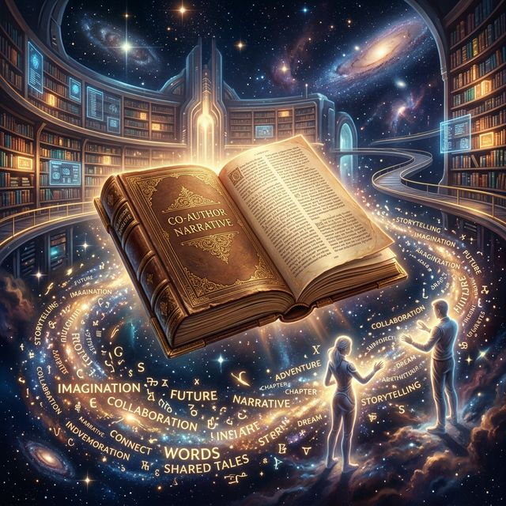
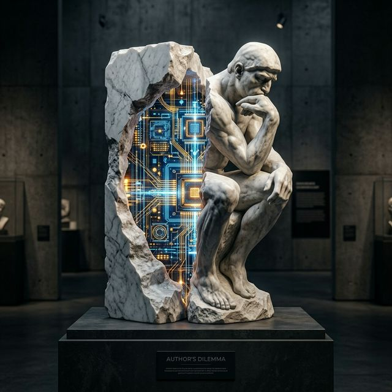
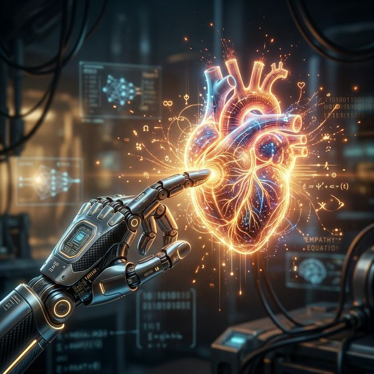

Capítulo 01
Mentes Aumentadas
"Não é sobre máquinas pensando como humanos. É sobre humanos transcendendo seus próprios limites com a ajuda de próteses cognitivas."
Nós sempre construímos ferramentas para estender nossos corpos. A alavanca estendeu nossos músculos, o telescópio estendeu nossos olhos, e os motores estenderam nossas pernas. No entanto, por milênios, a nossa cognição operou dentro de um espaço confinado: as limitações biológicas de retenção de memória e processamento paralelo. A Inteligência Artificial muda este paradigma fundamental.
A primeira fronteira desta revolução não está no hardware que roda os modelos fundacionais de IA, mas na **aceitaçāo cognitiva** do ser humano. Mentes aumentadas não são cérebros conectados a chips (ainda que isso seja uma possibilidade futura), mas sim pessoas que desenvolveram um novo 'loop' de feedback neural. Quando você escreve um prompt complexo e a máquina devolve uma solução em segundos, seu cérebro imediatamente itera sobre essa solução, gerando um novo comando ainda mais refinado.
Processamento Biológico
Excelente em intuição, metáforas, conexões não lineares e empatia profunda.
Processamento Sintético
Imbatível em reconhecimento de padrões brutos, velocidade de compilação e vastidão de dados.
É aqui que o papel do criativo moderno sofre uma mutação irreversível. Ele deixa de ser apenas um **executor** laborioso de técnicas manuais para se tornar um **diretor de orquestra** e curador de possibilidades infinitas. A IA fornece a técnica bruta; o humano fornece a direção, a alma e o "porquê". A simbiose perfeita nasce quando paramos de ver a máquina como concorrente e começamos a usá-la como uma expansão direta do nosso próprio neocórtex.

Capítulo 02
As Novas Páginas em Branco
O medo do vácuo — o *horror vacui* — foi o carrasco incansável de muitos gênios ao longo da história da literatura e das artes visuais. Sentar diante de um canvas intocado ou de um documento de texto com um cursor piscando é enfrentar o abismo. A pressão para manifestar matéria a partir do nada consome uma energia mental gigantesca que poderia ser usada para lapidar ideias.
Hoje, a IA atua como uma musa incansável e hiperativa, oferecendo o **rascunho zero**. O artista ou escritor moderno não precisa mais começar do nada. Ao alimentar o modelo com algumas palavras-chave, intenções ou referências, a máquina cospe rapidamente dezenas de variações topológicas da ideia inicial. A maioria pode ser medíocre, mas elas quebram o gelo. Elas estabelecem o atrito necessário para a mente humana começar a editar, criticar e transformar.
💡 Interação Reflexiva
Se a máquina cria a estrutura primária quebrar o bloqueio criativo, a originalidade do humano diminui ou se concentra apenas em um nível superior de abstração?
O foco do talento não é mais a gênese do material bruto, mas sim a **curadoria requintada**. Saber iterar sobre o lixo computacional para encontrar a gema escondida exige um olhar ainda mais afiado do que antes. A genialidade migrou da capacidade de gerar do zero para a capacidade de reconhecer o excepcional meio ao ruído de infinitas possibilidades matemáticas.

Capítulo 03
Estética da Probabilidade
O que nós, humanos, chamamos convencionalmente de "beleza", "graça" ou "estilo", pode ser surpreendentemente decodificado em padrões matemáticos complexos de probabilidade. Quando um modelo de Difusão Latente gera uma pintura renascentista perfeita ou uma fotografia cyberpunk hiper-realista, ele não está "criando" no sentido romântico da palavra. Ele está navegando em um espaço probabilístico de ruído visual.
A revolução estética atual é baseada na matemática da difusão: ensinar uma rede neural a destruir e depois reconstruir imagens adicionando ruído gaussiano. O modelo aprende o trajeto microscópico entre o caos absoluto e uma obra-prima estruturada. Essa "geometria oculta" sugere que muitas das nossas preferências visuais universais (proporção áurea, contraste cromático, balanço de massas) são padrões perfeitamente mapeáveis.
Isso não torna a arte fria ou menos valiosa. Pelo contrário, desmistifica certas técnicas mecânicas e coloca o poder da alta estética nas mãos de quem possui o conceito, mas não tem o treinamento motor para executá-lo. O valor da arte passa a residir quase integralmente na intenção conceitual do *prompt*, na ironia, no contexto cultural e no impacto emocional procurado, deixando a execução plástica a cargo de trilhões de operações de ponto flutuante.

Capítulo 04
Design Generativo em Massa
No paradigma do design e engenharia tradicional, o processo é eminentemente linear e focado. Definimos os parâmetros restritivos, o uso do produto, as tolerâncias materiais e, a partir de ensaios e erros limitados pelo tempo, o engenheiro escolhe **uma** solução otimizada.
O design generativo vira essa pirâmide de cabeça para baixo. Em vez de projetar o objeto, o humano projeta o sistema de regras e os limites da física que o objeto deve respeitar. A IA então explora febrilmente o espaço de design, testando e iterando sobre milhares ou milhões de variações em questão de horas. O resultado? Formas alienígenas, orgânicas, que se assemelham mais a ossos biológicos moldados pela evolução do que a peças desenhadas em software CAD clássico.
O impacto industrial disso é incomensurável. Peças de motores mais leves para aviação comercial, chassis de carros que resistem a impactos imitando a biometria de crânios animais, layouts urbanos que simulam o crescimento de colônias de fungos (notoriamente eficientes em roteamento de redes). O humano, novamente, torna-se o selecionador evolucionário, separando as formas utópicas das funcionais em um novo tipo de seleção artificial.

Capítulo 05
A Narrativa Coautoral
Escrever sempre foi tido como a mais seliotária das profissões (e frequentemente, a mais dolorosa). O autor e a tela. A ficção contemporânea, os roteiros de cinema e as campanhas publicitárias agora estão experimentando a vertigem da co-autoria sintética de forma íntima. Grandes Modelos de Linguagem (LLMs) como GPT, Claude e outros, operam como *sparring partners* de elite.
O escritor descreve as nuances de um personagem e os conflitos do arco dramático, e a máquina sugere ramificações imprevisíveis. Ela não escreve o livro final (modelos ainda sofrem com coerência longa baseada em janela de contexto e ausência de experiência vivida autêntica), mas ela cria "bifurcações" no labirinto literário que o autor humano talvez nunca tivesse considerado. Ela expõe clichês forçando o autor a tentar superá-los.
"Eu não uso a IA para que ela escreva por mim. Eu a uso para me mostrar caminhos ruins, para que eu possa focar em encontrar os bons." - Novo mantra literário.
Enquanto a máquina se esforça matematicamente para predizer a próxima palavra mais provável, garantindo coesão gramatical assustadora, o humano concentra sua energia vital para quebrar propositalmente essa previsibilidade probabilística, injetando dor, triunfo empírico e ironia não mapeada nos bancos de dados de treinamento.

Capítulo 06
O Dilema da Autoria
Se as obras geradas (codificadas em sua execução por redes neurais baseadas em pesos não interpretáveis e bilhões de datasets raspados da internet cravados de *copyrights*) ganham prêmios de arte e literatura, a fundação legal da criação sofre um terremoto.
Quem possui a propriedade intelectual de uma obra criada em simbiose íntima e constante? O programador do modelo que ajustou as taxas de aprendizado? A megacorporação detentora dos clusters de GPU? O prompt engineer que digitou cuidadosamente 300 palavras descrevendo uma cena com "iluminação volumétrica e lentes f/1.8"? Ou talvez, filosoficamente, o copyright pertença coletivamente a todos os artistas passados cuja arte serviu de treino para a máquina?
As legislações em todo o mundo tentam se atualizar, mas o ritmo algorítmico escapa à burocracia humana. A distinção rígida entre autoria exclusiva humana e sintética começa a borrar quando percebemos que *todo* trabalho digital futuro será, em algum nível macro ou micro, assistido por IA. Uma obra será avaliada pelo quão "direcionada" e transformada ela foi pela intenção criativa da pessoa que a publicou.
Capítulo 07
Sinfonias do Silêncio
A música frequentemente foi vista como o último bastião intocável da emoção puramente orgânica, uma arte efêmera conectando cordas vocais trêmulas a tímpanos sensíveis. Mas as ondas sonoras são, na sua essência, sinais matemáticos ao longo do tempo. E a IA, assim como fez com os pixels e os tokens de texto, aprendeu a dançar no domínio do áudio.
As mais recentes inovações não apenas clonam vozes ou timbres de artistas famosos, mas compõem do zero. Elas misturam gêneros que nunca se tocaram — *jazz de fusão pós-bop tocado com os timbres de ruídos de motores a diesel gerados de forma procedural*. O produtor musical no estúdio de hoje gasta menos tempo afogando-se em síntese de falhas manuais e mais tempo guiando o gosto algorítmico.
Talvez a mudança mais profunda na música gerativa seja sua capacidade de criar trilhas sonoras adaptáveis e personalizadas em tempo real. Uma música que diminui seu tempo acompanhando os batimentos cardíacos do ouvinte usando um smartwatch, alterando sua estrutura de acordes para modos menores quando detecta sinais biológicos de estresse. Uma sinfonia que não foi escrita *para* o ouvinte, mas sim *junto* com a biologia do ouvinte a cada segundo.
Capítulo 08
Arquitetura do Impossível
A arquitetura e o urbanismo modernos há muito tempo estão amarrados às severas cadeias de forças físicas estáticas, cálculos de compressão inflexíveis e estagnações de software limitados. A revolução das grandes IAs permite um resgate dos projetos oníricos que pareciam confinados ao reino da ficção científica e utopias em papel.
Ao conectar IA de layout visual com redes de teste de estresse contínuo em novos metamateriais gerados iterativamente por computador, os novos "arquitetos-algoritmos" simulam milhões de combinações para erguer estruturas hiperleves, de alta tensão. Curto falando: paredes que respiram e se adaptam térmica e luminosamente pelo aprendizado de máquina contínuo das rotinas dos inquilinos.
O desenho conceitual flui solto do prompt para o modelo 3D num abrir e fechar de olhos. Casas orgânicas cultivadas digitalmente, edifícios sinuosos desafiando a gravidade em cúpulas vítreas que minimizam o atrito com correntes de ar climáticas extremas. A eficiência técnica pura calculada em décimos de segundos é entregue ao esteta humano para esculpir as sobras, num balanço glorioso de pragmatismo digital e beleza monumental humana.

Capítulo 09
Empatia Algorítmica
Uma máquina feita de metal rarefeito e lógica binária pode compreender o amor platônico, o luto absoluto ou a euforia pueril? Não, claro que não. As redes neurais não sentem absolutamente nada; elas não experimentam a angústia diante da impermanência mortal para sentirem arte real.
E, no entanto... a ironia majestosa é que elas não precisam sentir para gerar. O que nós não medimos inicialmente na evolução em grande escala dos textos humanos ingeridos por bilhões de parâmetros foi a revelação da métrica latente do sofrimento e das virtudes contidas nesses textos. A máquina simulativa mapeou os pontos cegos e picos brilhantes de toda a narrativa confessional, teológica e romântica humana já despejada nos repositórios eletrônicos.
Consequentemente, esses sistemas espelham com enorme precisão um fantasma de resposta empática sintética. Poemas produzidos respondem precisamente a dores codificadas nos prontos, pinturas são escurecidas evocando melancolia estrutural inegável. Não nascem da compreensão da dor viva, mas do domínio matemático dos vetores literários e conceituais do choro. E a pergunta impronunciável ecoa para a humanidade: se os algoritmos podem emular o consolo e a beleza tão finamente sem ter a centelha da vida genuína, será a nossa empatia biologicamente única também um arranjo algorítmico superdesenvolvido a partir de macacos tribais?
Capítulo 10
O Nosso Legado Intocável
As chaminés industriais substituíram os teares de madeira e causaram pranto desesperador, mas não nos substituíram como espécie contadora de histórias e exploradora do abismo estelar. Da mesma forma, os clusters magnânimos processando redes atencionais gigantes não roubarão do ser humano a compulsão patológica para colocar *significado* na existência caótica.
Se as máquinas pintam hiper-realismo em um milissegundo, a pintura a óleo humana artesanal não desaparecerá; ela simplesmente deixará de buscar o registro literal, da mesma forma que a invenção da máquina fotográfica empurrou os expressionistas e cubistas para longe do monótono registro realista há mais de um século, abrindo caminho para explorações de movimento e psique nunca antes vistas.
O legado do animal humano neste ecossistema fundido será atuar como curador, o fiador supremo do propósito existencial e do sofrimento. Mentes alienígenas mecânicas fornecerão o volume e as permutações insanas. E nós olharemos para o abismo dessas variações produzidas nos servidores silicios dispostos em estepes frias gerando arte, e nós diremos: "Esta obra, e apenas esta obra dentre tantas equações, importará porque possui um fio incandescente voltando à nossa carne perecível".
E aqui começa não o fim, mas a verdadeira explosão criativa de nosso milênio.